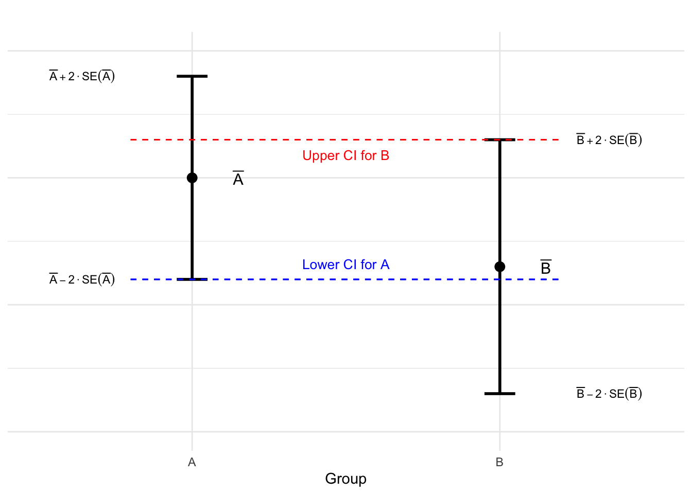
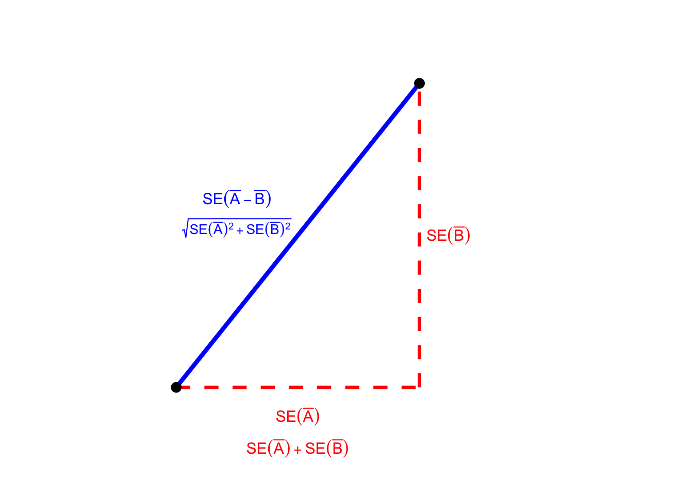

Overlapping Confidence Intervals
statistics
Perhaps you’ve seen a claim like this in an applied paper: “the estimated effect for Group A is statistically significant, but the estimated effect for Group B is not; this treatment helps As but not Bs.” But this reasoning is flawed.
To see why, consider the following example from Gelman & Stern. We have data from two independent samples: Group A and Group B. For Group A our estimated effect is 25 with a standard error of 10, yielding an approximate 95% confidence interval of \(25 \pm 20\) or \((5, 45)\). This interval does not include zero, so the effect for Group A is statistically significant at the 5% level. For Group B our estimated effect is 10 with a standard error of 10, yielding a confidence interval of \(10 \pm 20\) or \((-10, 30)\). This interval does include zero, so the effect for Group B is not statistically significant at the 5% level. But there is no statistically significant difference between the groups: the difference of means is \(25 - 10 = 15\) but the standard error for the difference is \(\sqrt{10^2 + 10^2} = \sqrt{200} \approx 14.14\). Thus, the 95% confidence interval for the difference is \(15 \pm 28\) or \((-13, 43)\), which comfortably includes zero.
To quote the title of the aforementioned paper: The Difference Between “Significant” and “Not Significant” is not Itself Statistically Significant. Meditate on this lesson and repeat it ten times before going to bed every night.
After you’ve done this, I have a puzzle for you to ponder. In our example from above, the intervals for A and B overlap and the difference is not significant. Is this a general rule? In other words, does overlap in the two intervals imply no significant difference between the groups? While we’re at it, what about the opposite case? If the two intervals do not overlap, does that mean that there is a significant difference between the groups?
Setting the Stage
Intervals for A, B and their difference.
Let \(\bar{A}\) be our estimator of the population mean \(\mu_A\) for Group A, and let \(\text{SE}(\bar{A})\) be its standard error. Similarly, let \(\bar{B}\) be our estimator of the population mean \(\mu_B\) for Group B, with standard error \(\text{SE}(\bar{B})\). If the samples we used to construct \(\bar{A}\) and \(\bar{B}\) are independent, then \(\text{Cov}(\bar{A}, \bar{B}) = 0\) and \[\text{SE}(\bar{A} - \bar{B}) = \sqrt{\text{SE}(\bar{A})^2 + \text{SE}(\bar{B})^2}\] as in the example from above. If \(\bar{A}\) and \(\bar{B}\) are approximately normally distributed, say by appealing to the central limit theorem, then we can construct 95% confidence intervals for \(\mu_A\), \(\mu_B\) as follows \[\mu_A \colon \quad \bar{A} \pm 2 \times \text{SE}(\bar{A}), \quad \quad \mu_B\colon \quad \bar{B} \pm 2 \times \text{SE}(\bar{B}).\] Similarly, we can construct a confidence interval for the difference in means \(\mu_A - \mu_B\), namely \[ (\bar{A} - \bar{B}) \pm 2 \times \text{SE}(\bar{A} - \bar{B}). \] More generally, to construct an approximate \((1 - \alpha) \times 100\%\) confidence interval, we would replace the 2 above with the appropriate quantile of a standard normal distribution.1 Below I’ll call this quantile \(z\) for short.
When is the difference significant?
The difference between \(\mu_A\) and \(\mu_B\) is statistically significant at the \(\alpha \times 100\%\) level if the confidence interval for \(\Delta\) does not include zero, i.e. if \(|\bar{A} - \bar{B}| > z \cdot \text{SE}(\bar{A} - \bar{B})\). But working with absolute values will quickly become tedious, so without loss of generality, let’s assume \(\bar{A} \geq \bar{B}\). If this doesn’t hold, we can always relabel the two groups so it does hold. Then the condition for a significant difference becomes \[(\bar{A} - \bar{B})/z > \text{SE}(\bar{A} - \bar{B}).\]
When do the intervals overlap?
Again, without loss of generality, we can assume that \(\bar{A}\geq \bar{B}\). Now think about what it would mean for the two confidence intervals to overlap. The center of the interval for \(\mu_A\) is to the right of the center of the interval for \(\mu_B\) since \(\bar{A} \geq \bar{B}\). So for the two intervals to overlap, the lower confidence limit of the \(\mu_A\) interval must be to the left of the upper confidence limit of the \(\mu_B\) interval. This figure illustrates the logic using \(z = 2\).
From the figure, we see that the two intervals overlap if \[\bar{A} - 2 \cdot \text{SE}(\bar{A}) < \bar{B} + 2 \cdot \text{SE}(\bar{B})\] Rearranging, and using the generic quantile \(z\), this becomes \[(\bar{A} - \bar{B})/z < \text{SE}(\bar{A}) + \text{SE}(\bar{B}).\]
Case I: Overlapping Intervals for A and B
Formalizing the Question
Can the confidence intervals for A and B overlap despite there being a significant difference of means between the two groups? Using the results from above, this question is equivalent to asking whether it’s possible for both of these inequalities to hold at the same time:
- Overlapping CIs: \((\bar{A} - \bar{B})/z < \text{SE}(\bar{A}) + \text{SE}(\bar{B})\)
- Significant Difference: \((\bar{A} - \bar{B})/z > \text{SE}(\bar{A} - \bar{B})\)
So the question becomes: can we find values of \(\bar{A}\), \(\bar{B}\), \(\text{SE}(\bar{A})\), and \(\text{SE}(\bar{B})\) such that \[\text{SE}(\bar{A} - \bar{B}) < \frac{\bar{A} - \bar{B}}{z} < \text{SE}(\bar{A}) + \text{SE}(\bar{B})?\]
Let’s talk about triangles!
For just a moment, forget that we’re talking about statistics and cast your mind back to high school geometry. There are two facts I’d like you to recall:
1: The Pythagorean Theorem
If \(a\) and \(b\) are the lengths of the legs of a right triangle, then the length \(c\) of the hypotenuse satisfies \(c = \sqrt{a^2 + b^2}\).
2: The Triangle Inequality
For any triangle with sides \(a\), \(b\), and \(c\), we have \(c \leq a + b\).2
So how do these two facts help us? Consider a right triangle whose legs have lengths \(\text{SE}(\bar{A})\) and \(\text{SE}(\bar{B})\). By the Pythagorean Theorem, the hypotenuse of this triangle has length \[\sqrt{\text{SE}(\bar{A})^2 + \text{SE}(\bar{B})^2} = \text{SE}(\bar{A} - \bar{B}) \] and by the triangle inequality, we have: \[\text{SE}(\bar{A} - \bar{B}) < \text{SE}(\bar{A}) + \text{SE}(\bar{B}).\] We can read this inequality from the following figure: travelling along the dashed red path covers a distance of \(\text{SE}(\bar{A}) + \text{SE}(\bar{B})\), while travelling along the solid blue path the shorter distance of \(\text{SE}(\bar{A} - \bar{B})\).

The Solution
The question we set out to answer is whether we can find values that satisfy the inequality: \[\text{SE}(\bar{A} - \bar{B}) < \frac{\bar{A} - \bar{B}}{z} < \text{SE}(\bar{A}) + \text{SE}(\bar{B}).\] Since the right-hand side is always strictly larger than the left-hand side, the answer is yes. Let’s try it out using a simple example. Suppose that \(\text{SE}(\bar{A}) = \text{SE}(\bar{B}) = 10\) as in the example from above, and consider a 95% confidence interval so that \(z \approx 2\). Then the inequality becomes \[ 20 \sqrt{2} < \bar{A} - \bar{B} < 40. \] Since \(20 \sqrt{2} \approx 28.28\) we have a whole range of values for \(\bar{A} - \bar{B}\) that will do the trick. For example, \(\bar{A}-\bar{B} = 30\) will do the trick. So if \(\text{SE}(\bar{A}) = \text{SE}(\bar{B}) = 10\), \(\bar{A} = 40\) and \(\bar{B} = 10\), the 95% CIs for A and B overlap but there is a significant difference between the two groups. This is the opposite of Gelman & Stern’s example.
Our inequality from above depends only the difference between \(\bar{A}\) and \(\bar{B}\), not on the individual value of each sample mean. So if we keep the same standard errors as before but set \(\bar{A} = 15\) and \(\bar{B} = -15\), so the difference of means remains 30, we obtain the same result: overlapping intervals with a significant difference between the two groups. Notice anything interesting about this example? The interval for A is \((-5,35)\) while the interval for B is \((-35, 5)\). So both intervals include zero but there is still a significant difference between them! If all we know is that two intervals overlap, we can’t say anything about the significance of the difference.
Case II: Intervals for A and B that Don’t Overlap
Now for the easy one. Since \[(\bar{A} - \bar{B})/z < \text{SE}(\bar{A}) + \text{SE}(\bar{B}).\] holds if and only if the intervals overlap, we merely reverse the inequality to get a condition for intervals that do not overlap, namely \[(\bar{A} - \bar{B})/z > \text{SE}(\bar{A}) + \text{SE}(\bar{B}).\] Appending what we learned above from our right triangle diagram gives \[(\bar{A} - \bar{B})/z > \text{SE}(\bar{A}) + \text{SE}(\bar{B})> \text{SE}(\bar{A} - \bar{B}).\] So if the intervals do not overlap, then \((\bar{A} - \bar{B})/z\) must be greater than \(\text{SE}(\bar{A} - \bar{B})\), which is precisely the condition for a significant difference between the two groups.
In Summary
In an independent samples problem where the two individual confidence intervals overlap, there may or may not be a significant difference between the groups. Even if the two intervals both contain zero, there could still be a significant difference between them. If the two intervals do not overlap then we can conclude that there is a significant difference. But if you only take one lesson away from this post it should be this one: the difference between significant and not significant is not itself significant. If you want to carry out inference for a difference, you need to construct the standard error for that difference.
Footnotes
Granted, 2 is slightly larger than \(\texttt{qnorm}(0.975)\), but do you really want to multiply by 1.96 in your head?↩︎
The triangle inequality just says that “the shortest distance between two points in a Euclidean plane is a straight line.” If we’re working with a genuine triangle, then the vertices cannot lie on the same line. So traveling from \(x\) to \(z\) via \(y\) always covers a greater distance than going straight from \(x\) to \(z\).↩︎